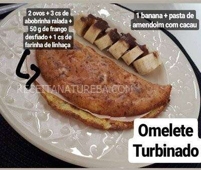
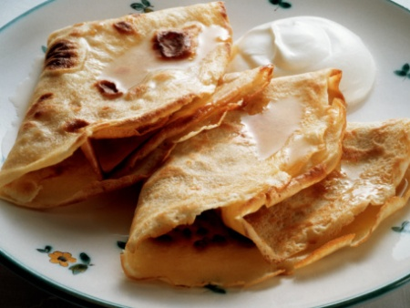

Contact
2021.06.21 21:33

- 13 dicas para um café da manhã nutritivo - Caldo Bom
- Receitas de café da manhã: 7 opções para sair da rotina .
- 10 receitas de café da manhã saudável em até 5 minutos .
- Especial café da manhã - Panelinha
- Receita de Panqueca americana | CyberCook
- 8 sugestões para um café da manhã saudável, delicioso e .
- → 20 melhores RECEITAS PARA O CAFÉ DA MANHÃ .
- 11 receitas para o café da manhã para começar o dia bem
- 15 ideias de café da manhã para começar o dia bem
- 32 receitas que vão te ajudar a preparar um café da manhã .
- 13 dicas para um café da manhã nutritivo - Caldo Bom
- Receitas de café da manhã: 7 opções para sair da rotina .
- 10 receitas de café da manhã saudável em até 5 minutos .
- Especial café da manhã - Panelinha
- Receita de Panqueca americana | CyberCook
- 8 sugestões para um café da manhã saudável, delicioso e .
- → 20 melhores RECEITAS PARA O CAFÉ DA MANHÃ .
- 11 receitas para o café da manhã para começar o dia bem
- 15 ideias de café da manhã para começar o dia bem
10 saudável em até 5 minutos · 1. Bolo de chocolate com 3 ingredientes · 2 . - 32 receitas que vão te ajudar a preparar um café da manhã .
10 saudável em até 5 minutos · 1. Bolo de chocolate com 3 ingredientes · 2 .
 